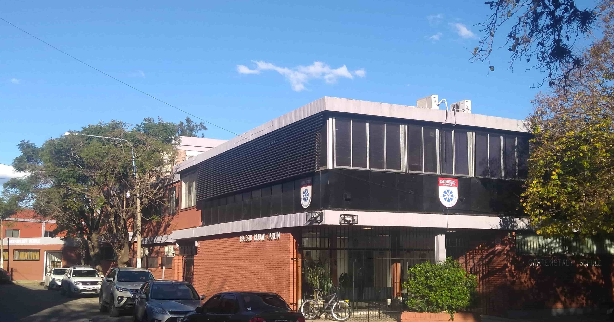
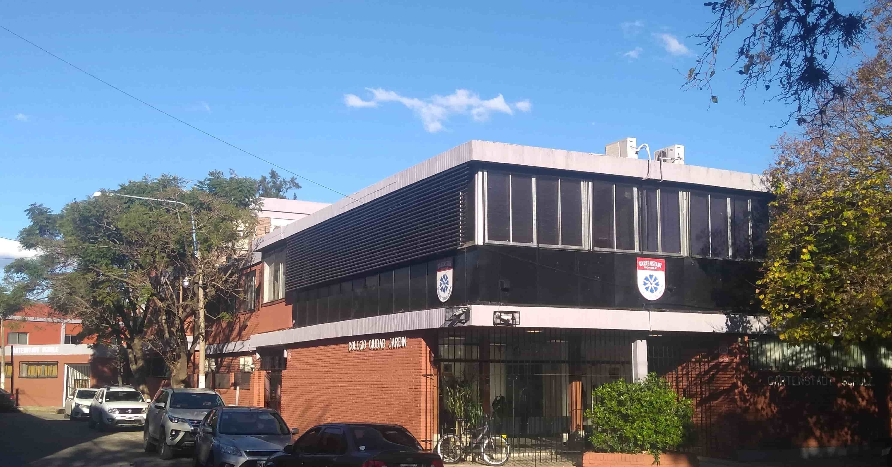

EL GARTENSTADT
 

Herzlich willkommen
Bienvenidos al Gartenstadt Schule nuestra querida escuela fundada en 1954 por los integrantes de la comunidad alemana residente en Ciudad Jardín, su sueño fue crear una escuela para toda la comunidad que entrelazara las tradiciones y valores culturales de Argentina y Alemania.
Hoy apoyados en la visión de los fundadores ofrecemos a nuestros alumnos una educación integral de calidad donde los idiomas alemán e inglés, el deporte, la música, las actividades de vida en la naturaleza y los viajes de intercambio estudiantil con Alemania agregan valor a la enseñanza oficial.
Pertenecemos y participamos de las actividades de la Comunidad de Trabajo de Escuelas Argentino Alemanas y mantenemos una estrecha y fructífera relación con la embajada de Alemania para fortalecer los lazos culturales con esa moderna y pujante nación.
Los invito a conocer nuestra escuela en donde sin duda encontrarán el ámbito apropiado para la educación de sus hijos.
Cordialmente,
Luis María Martelletti
Director General
Un poco de historia
Octubre de 1953. Ciudad Jardín era joven, tenía apenas 10 años. Y sus habitantes, pisando el suelo que fuera escenario de la histórica batalla de Caseros, soñaban un futuro junto a sus familias, perpetuando tradiciones esencialmente alemanas y de otros países europeos, y anhelando un colegio para la población infantil. Padres y alumnos que combinaban trabajos y esfuerzos con la propuesta de poner en común iniciativas y capacidades para hacer realidad un colegio para los chicos.
Y fue la empresa FINCA –ubicada en la calle Matienzo- la que prestó parte de sus instalaciones para dar paso a las actividades educativas mientras que el mobiliario fue cedido por otros colegios.
1954 es el año de la fundación, año en el que 30 chicos reciben las primeras clases de alemán. Pero es en abril de 1955 cuando se inician las actividades de la Sección Primaria, con 68 alumnos.
Los padres fundadores se agruparon en una Cooperativa Escolar y Cultural que constituyó la primera escuela cooperativa del país.
Ya en 1956 se dieron los primeros pasos formales ante las autoridades provinciales para la cesión de un terreno fiscal apropiado en donde asentar el edificio del CCJ. También se iniciaron las obras para construir dos nuevas aulas del tipo desmontable con el objetivo de que pudieran ser utilizadas en cualquier otro terreno.
El Nivel Secundario del Colegio Ciudad Jardín empezó a funcionar en un chalet alquilado ubicado sobre la Avenida Wernike. La sede estaba identificada con un típico cartel de madera a la usanza europea.
Fruto de la iniciativa de los padres, el 5 de julio de 1957 se creó una biblioteca que inicialmente contó con 500 volúmenes.
En 1958 se levantó una gran construcción en los terrenos de la escuela primaria. El secundario podía dar así albergue a sus cuatro cursos.
La década del 60 marcó una etapa de fuerte crecimiento en nuestra Institución. Cinco años después del inicio de la actividad, el Colegio Ciudad Jardín se constituía en un centro educativo de características distintivas.
En 1962 se concretó un hecho muy significativo: la adquisición del edificio del Colegio Secundario. Y en 1964 se había duplicado la cantidad de alumnos con referencia a los anotados en la primera inscripción.
En 1968 el edificio fue ampliado con la construcción de dos nuevas aulas y la sala del comedor. Los años 70 marcaron una etapa de consolidación y afianzamiento en el prestigio institucional. Nuestro colegio se perfilaba como una institución de alta calidad educativa. En 1970 se reestructuró el Área de Deportes contratándose un nuevo plantel de profesores de Educación Física.
Con el esfuerzo de toda la comunidad se construyó la losa del edificio principal. La obra fue concluida al inicio del ciclo lectivo de 1975.